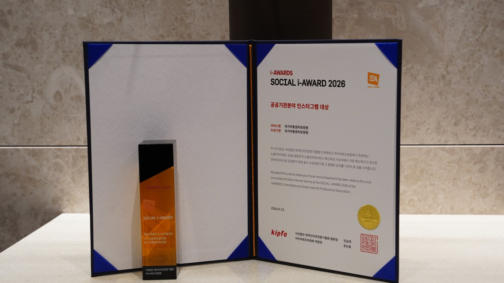
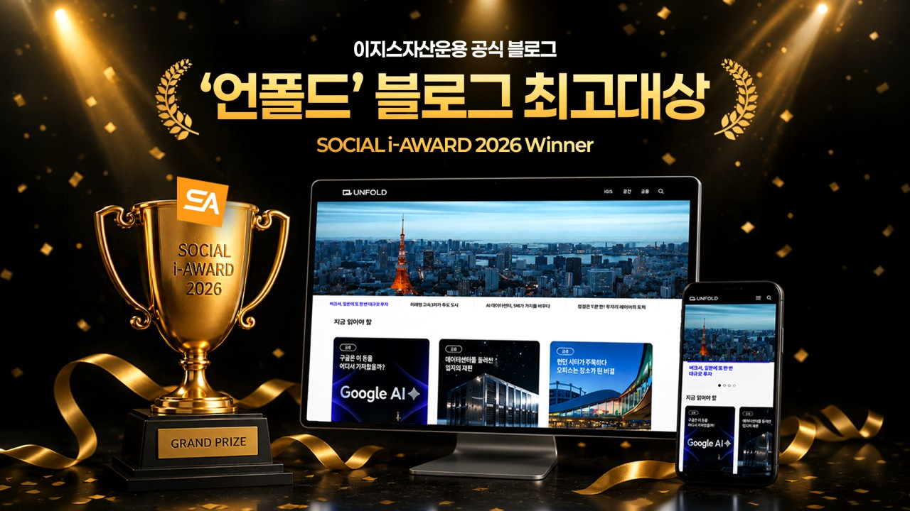
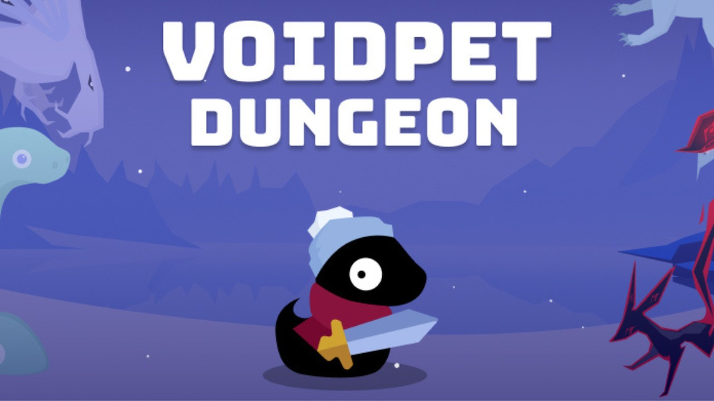
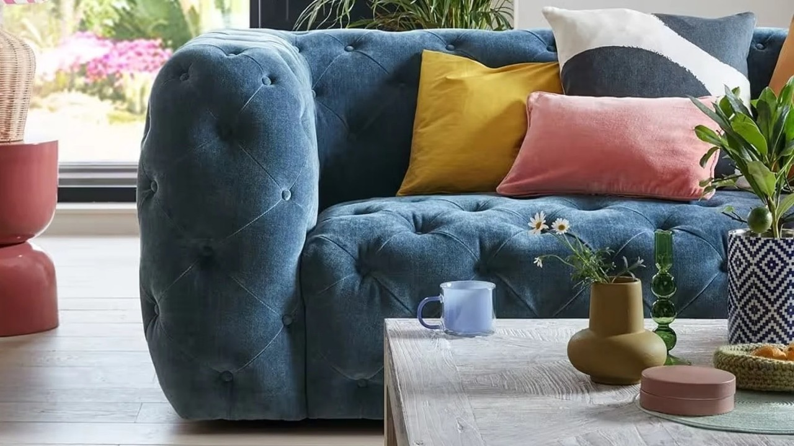
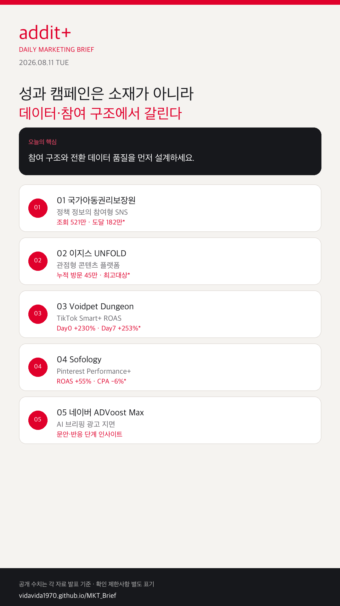

01
AI 검색·브리핑이 실제 광고 지면이 된다
네이버 ADVoost Max는 AI 브리핑 반응 단계를 별도 인사이트로 제공합니다.
AI 광고 지면이 실운영으로 들어오고, 공공·금융 콘텐츠는 참여 구조로 바뀌며, 숏폼·쇼핑 자동화는 ROAS와 전환 데이터 품질을 함께 검증하는 쪽으로 이동하고 있습니다.
네이버 ADVoost Max는 AI 브리핑 반응 단계를 별도 인사이트로 제공합니다.
Google은 Demand Gen 중심으로 GDN 운영을 전환합니다.
발굴-협업-성과 분석-쇼핑 전환이 데이터로 연결됩니다.
소재 풀과 전환 이벤트 품질이 AI 입찰 성과를 좌우합니다.
Meta는 AI 생성·수정 광고의 About this ad 라벨을 확대합니다.

KOREA아동권리·정책 정보를 카드형·참여형 콘텐츠로 재구성했습니다. 2025년 7월~2026년 5월 누적 조회 521만, 도달 182만, 참여 6.1만 회와 소셜아이어워드 2026 공공기관 인스타그램 대상이 공개됐습니다.

KOREA도시·공간·자본시장·대체투자 해설 콘텐츠를 축으로 운영해 누적 방문 45만 명을 기록했고, 소셜아이어워드 2026 블로그 최고대상을 받았습니다.

GLOBALDay 0 tROAS 입찰, Creative Autoselect, 15개 이상 소재, 크리에이터 영상, CBO를 결합했습니다. Day 0 ROAS +230%, Day 7 ROAS +253%, 증분 예산 지출 +189%가 공개됐습니다.

GLOBALPerformance+ ROAS 입찰과 전환 최적화 캠페인을 A/B 비교했습니다. 대조군 대비 ROAS 55% 증가, CPA 6% 감소가 공개됐습니다.
 KOREA
KOREA2026-07-21 광고 노출이 시작됐고, AI 브리핑 내 반응 단계를 별도 인사이트로 제공합니다. 키워드 세팅보다 랜딩 정보 품질이 전제입니다.
GDN을 Demand Gen 안에서 운영하도록 전환하며 ROI·CPA 개선 사례를 공개했습니다.
Google 공식 발표 →생성·수정된 광고의 About this ad AI 정보 라벨 확대가 검수 체크리스트가 됩니다.
Meta 업데이트 →
자동화 기능을 켜는 것보다, 참여 포맷·소재 풀·전환 이벤트·AI 라벨 체크리스트를 먼저 만드는 팀이 성과를 가져갑니다.
{kind=link}